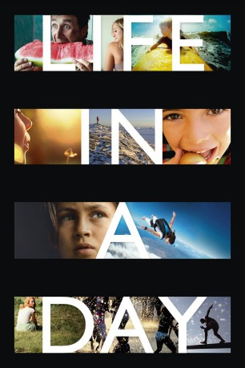

#2399 Life in a Day - Ein Tag auf unserer Erde
Alternativ: Life in a Day
 
 IMDB-Wertung: 7.7 / 10
IMDB-Wertung: 7.7 / 10  Metascore: 58
Metascore: 58 
Aufgefordert, einen Tag aus ihrem Leben zu dokumentieren, stellten User aus 197 Ländern ca. 80.000 Clips ins Netz. Man sieht Hula-Hoop-Tänzer in Mexiko, vier Inder auf einem Motorrad, einen Vater, der im Kreißsaal in Ohnmacht fällt, oder einen Koreaner, der seit neun Jahren um die Welt radelt - für die Wiedervereinigung seines Landes. Nicht zu vergessen die Bilder einer Katastrophe: Am besagten Tag, dem 24. Juli 2010, fand in Duisburg gerade die Loveparade statt. - Ein Projekt der Brüder Ridley und Tony Scott mit YouTube.
Jahr: 2011
Dauer: 95 Minuten
FSK:
Land: England Studio: Rapid Eye MoviesTonspuren:
Untertitel:
Auflösung: 1080p (1920x1080) Größe: 5816 MB
Genre: Drama, Dokumentation
Regisseur: Loressa Clisby, Kevin Macdonald, Hiroaki Aikawa, Natalia Andreadis, Jack Attridge
Drehbuch:
Soundtrack: Harry Gregson-Williams, Matthew Herbert
Darsteller:
- Hiroaki Aikawa als Himself
- Cindy Baer als Herself
- Arsen Grigoryan als Himself
- Kathleen Meyer als Herself
- Moica als Herself
- Drake Shannon als Himself
- Caryn Waechter als Herself
- Andrea Kfoury als Herself
- Teagan Bentley als Herself
- Ester Brym als Herself
- Cristina Bocchialini als Herself
- Jesse Brisendine als Himself
- Andrea Cunningham als Herself
- Shir Decker als Himself
- Jaap Dijkstra als Himself
- Ayman El Gazwy als Himself
- Boris Grishkevich als Himself
- Jennifer M. Howd als Herself
- Christopher Brian Heerdt als Himself
- Jane Haubrich als Herself
- David Jacques als Himself
- Brisendine Jesse als Himself
- Ranja Kamal als Herself
- Amelie Sara Kukucska als Herself
- Bob Liginski Jr. als Himself
- Catherine Liginski als Herself
- Zuqy als Himself
- Jack C. Marquez als Himself
- Shahin Najafipour als Himself
- Fredeik Boje Mortensen als Himself
- Lilit Movsisyan als Herself
- Ashley O'Dell als Herself
- Emmanuelle Pickett als Herself
- Ian Service als Himself
- Ildikó Zöldi als Herself
- Corey Browne als Evan
- Asher Wolf Darren als Himself
- Lorena Giménez als
- Morgan Rhys als Himself
Datei: X:\Dokumentationen\Dokus(A-Z)\Life in a Day - Ein Tag auf unserer Erde (2011, FSK, 1920x1080).mkv seit 05.11.2015
Festplatte: HD Serien(SU-Z)+Dokus+Musik
 Es gibt insgesamt 34 Filme in der Gruppe 'Dokumentationen\Dokus(A-Z)'
Es gibt insgesamt 34 Filme in der Gruppe 'Dokumentationen\Dokus(A-Z)'